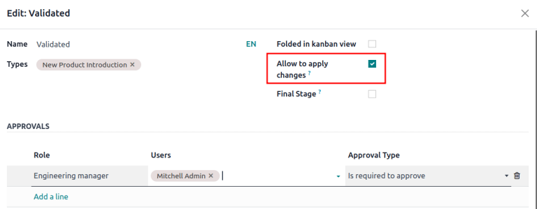

Tipo de ECO¶
A las órdenes de cambio de ingeniería (ECO) se les asigna un tipo de ECO para organizar y monitorear los cambios que se realizan a productos y listas de materiales (LdM). Cada tipo de ECO separa los ECO en un proyecto en vista de Gantt para asegurarnos que que los colaboradores y las partes interesadas solo vean y asistan con las mejoras relevantes a la |LdM|.
Por ejemplo, un fabricador de chips electrónicos puede usar los tipos de ECO “Introducción del nuevo producto”, “Mejora de producto”, “Cambio de componente” y “Actualización de firmware”. Así, los diseñadores e ingenieros se pueden enfocar en las ECO que estén en los proyectos “Introducción del nuevo producto” y “Mejora de producto”, por lo que no verán los ECO de cambios de proveedor o actualización de firmware, que no les interesan.
Crear un tipo de ECO¶
Para acceder a y gestionar los tipos de ECO debe ir a la aplicación .
Haga clic en Nuevo para poder crear un nuevo tipo de orden de cambio de ingeniería (ECO). En el nuevo formulario de Tipos de órdenes de cambio de ingeniería, llene la siguiente información:
Nombre: el nombre del tipo de ECO que organizará todos los ECO de este tipo en un proyecto.
Alias de correo electrónico: si se llena este campo opcional, los correos electrónicos que se envíen a esta dirección de correo harán que se generen ECO en la etapa más pegada a la izquierda de este tipo de ECO.
Example
El tipo de ECO Tipo de fórmula se usa antes de organizar y rastrear los ECO relacionados en un solo proyecto. Si llena el campo Dirección de correo se generarán ECO en el proyecto Cambio de fórmula que se le envió a la dirección de correo, pawlish-change@pawlished-glam.odoo.com.
Editar tipo de ECO¶
Para modificar el nombre de tipos de ECO existentes y las direcciones de correo vaya a la aplicación . Ahí, haga clic en el tipo de ECO deseado de la lista.
En el formulario de cada tipo de ECO edite los campos de Nombre y Seudónimo de correo electrónico.
Etapas¶
Dentro de un tipo de proyecto de ECO las etapas son como objetivos y se usan para identificar el progreso del ECO antes de que los cambios estén listos para aplicarse (ejemplo, “Retroalimentación”, “En progreso”, “Aprobado”, “Completado”).
Además, a cada etapa puede agregar personas responsables de la aprobación para que se asegure que los cambios a la |LdM| en producción no se realicen sin que antes de apruebe el ECO. Así evitamos que sucedan errores en la lista de materiales en producción, pues al menos habrá una revisión sugerida antes de que se apliquen los campos a la |LdM|.
Para las mejores prácticas, debe haber al menos una etapa de verificación, que es una etapa en la que es necesario tener la aprobación. También debe haver una etapa de cierre, donde se guardan los ECO que se cancelaron o aprobaron para usarlos en la siguiente |LdM| de producción.
Crear etapa¶
Para agregar una etapa, vaya a la aplicación y seleccione el proyecto para un tipo de ECO desde el tablero Información general de gestión de ciclo de vida del producto.
Después, en el flujo del proyecto Órdenes de cambio de ingeniería para tipos de ECO, haga clic en el botón + Etapa. Así se mostrará un cuadro de texto para ponerle nombre de la etapa. Después de ponerlo, haga clic en el botón Agregar para terminar de agregar la etapa.
Example
Aparecerá una nueva etapa llamada Asignados que separa los ECO de los que no están asignados en la etapa de Nuevo. Agregar una etapa nueva ayuda a que el gerente de producto pueda monitorear las tareas no asignadas.

Etapa de verificación¶
Haga clic en un tipo de ECO en para abrir la vista de kanban de los ECO de este tipo.
Para configurar una etapa de verificación, pase el ratón por la etapa deseada y seleccione el icono ⚙️ (engranaje). Después, haga clic en Editar para abrir una ventana emergente.
Configura la etapa de verificación en la ventana emergente de edición de la etapa. Solo haga clic en la caja Permitir aplicar cambios.
Después, agregue una persona responsable de la aprobación en la sección Aprobadores, haga clic en Agregar una línea y especifique la Función del aprobador, el Usuario y el Tipo de aprobación.
Asegúrese de que se configuró al menos un aprobador en el Tipo de aprobación: Se requiere para aprobar.
El aprobador enlistado recibe una notificación cuando los ECO llegan a la etapa especificada en la ventana emergente. Una vez que termine, haga clic en Guardar y cerrar.
Example
En el tipo de ECO Introducción de producto nuevo debe hacer clic en el icono ⚙️ (engranaje) y luego hacer clic en Editar para configurar la etapa Validada. Así se abrirá la ventana emergente Editar: validado.
Si agregamos al Gerente de ingeniería como aprobador, solo los ECO que este usuario apruebe pueden pasar a la siguiente etapa y cambiar la |lista de materiales| en producción.
Además, marque la opción Permitir aplicar cambios para asegurar que el comportamiento sea el adecuado.
Etapa de cierrre¶
Para configurar una etapa de cierre abra a la ventana emergente Editar: [etapa]. Para hacerlo, pase el ratón encima de la etapa deseada y haga clic en el icono ⚙️ (engranaje) que aparece en la esquina superior derecha. Después, haga clic en Editar en el menú desplegable.
En la ventana emergente Editar: [etapa] marque las opciones de Plegado en la vista de kanban, Permitir aplicar cambios y Etapa final.
Example
La etapa de cierre, donde configuramos Effectivo marcando las opciones Plegado en la vista de kanban, Permitir aplicar cambios y Etapa final.